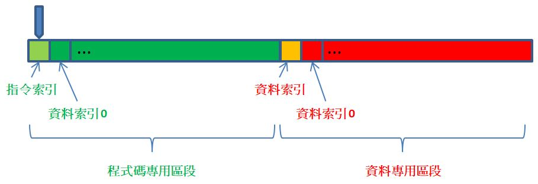

Brainfuck 看輸入
December 16, 2021現在已經打造了一台 Brainfuck 機器，可以寫點程式讓它來跑一下了，不過，Brainfuck 會不會太陽春了點？不會！其實 Brainfuck 還蠻複雜的，只不過因為 JavaScript 的一些魔法，才令它打造起來簡單一些。
只有一條磁帶
例如，目前的打造的 Brainfuck 真的使用單磁帶嗎？不，並沒有，其實使用了兩個磁頭、兩條磁帶，資料是寫在其中一個磁帶，另一條磁帶寫了 Brainfuck 程式碼，需要知道下個指令時，必須讀取程式碼磁帶，然後在資料磁帶上進行對應的操作。
如果沒了程式碼磁帶，Brainfuck 還會是 Brainfuck 嗎？畢竟，Brainfuck 有 [ 與 ] 指令可以用來撰寫迴圈之類的程式碼，這表示 Brainfuck 並單純逐一消耗指令到沒有指令為止，至少是必須記得 [ 與 ] 之間的指令，才有可能重複運行，沒了另一條程式碼磁帶，似乎會令 Brainfuck 不再能完成 Brainfuck 原本可以達到的任務。
不！就算真的沒了程式碼磁帶，還是能打造出 Brainfuck 的，因為可以將程式碼與資料寫在同一磁帶，這會令實作變得麻煩，然而並非做不到，拿掉程式碼磁帶，並不會令 Brainfuck 變笨。
實作的方式在於，可以在同一磁帶上規畫出程式碼專用區段及資料專用區段，為了方便，可以將程式碼專用區段放在磁帶開頭：

每次需要執行指令時，磁頭會回到程式碼專用區段的開頭，當中記錄了指令索引位置，索引 0 是從它的右邊開始起算，若指令需要讀寫資料或者在資料間移動，就移動至資料專用區段的開頭，看看接下來要讀寫哪個索引位置，索引 0 是從記錄資料索引的位置右方開始起算。
依機器存取磁帶之目的，概略上可以分為兩個狀態，一個是磁頭在程式碼專用區段移動時讀寫指令的狀態，一個是碰頭在資料專用區段讀寫資料的狀態，為了便於實作，稍後可以將這兩個狀態設計為獨立互不相干的兩個物件。
改造 Brainfuck 機器
來改寫〈打造 Brainfuck〉中的實作，首先，List 不用變更，因為它單純只是封裝 JavaScript 陣列的行為，接著，由於稍後會需要連續移動磁頭，因此將 Head 的 moveLeft、moveRight 加強為可連續移動的版本。
class Head {
constructor(left, current, right) {
this.left = left;
this.current = current;
this.right = right;
}
moveLeft(n = 1, head = this) {
if(n === 0) {
return head;
}
else {
let h = new Head(
head.left.init,
head.left.last || 0,
head.right.prepend(head.current)
);
return this.moveLeft(n - 1, h);
}
}
moveRight(n = 1, head = this) {
if(n === 0) {
return head;
}
else {
let h = new Head(
head.left.append(head.current),
head.right.first || 0,
head.right.tail
)
return this.moveRight(n - 1, h);
}
}
write(data) {
return new Head(this.left, data, this.right, this.defaultValue);
}
toString() {
let l = this.left.toString();
let r = this.right.toString();
return `[${l}](${this.current})[${r}]`;
}
}
moveLeft、moveRight 可以指定移動的位置數，預設值 1，表示僅在磁帶上移動一個位置。
在〈打造 Brainfuck〉中的 Commands，實際上就隱含著機器存取指令的一個狀態，然而由於是在另一個陣列中操作，狀態的概念不明顯，既然 Commands 隱含的就是機器存取指令的狀態，上頭的方法操作介面，就會是存取單一磁帶時需要的，只不過內部實作必須重新改寫：
class CommandState {
constructor(head) {
this.head = head;
}
// idx 是指令索引，不是指陣列索引
get idx() {
return this.head.current;
}
// 取得目前的指令
get current() {
return this.head.moveRight(this.idx + 1).current;
}
// 磁頭在指令區前進 n 個位置
step(n = 1) {
return new CommandState(
this.head.write(this.idx + n)
);
}
// 移動至最近的 ] 指令
rightBracket() {
function bracket(commandState) {
if(commandState.current === ']') {
return commandState.idx;
} else {
return bracket(commandState.step());
}
}
return new CommandState(
this.head.write(bracket(this))
);
}
// 移動至最近的 [ 指令
leftBracket() {
function bracket(commandState) {
if(commandState.current === '[') {
return commandState.idx;
} else {
return bracket(commandState.step(-1));
}
}
return new CommandState(
this.head.write(bracket(this))
);
}
// 將磁頭停靠在「指令索引」位置
park(head = this.head) {
return head.left.isEmpty() ?
new CommandState(head) : this.park(head.moveLeft());
}
isRunnable() {
return this.current !== '\0';
}
}
操作 CommandState 實例時必須注意的是，若是從資料存取狀態轉移至指令存取狀態，必須先將磁頭停靠在「指令索引」位置，以便後續可以讀取索引值、移動磁頭來取得指令，磁頭的停靠可以透過呼叫 park 來達到目的。
class DataState {
constructor(head) {
this.head = head;
}
// idx 是資料索引，不是指陣列索引
get idx() {
return this.head.current;
}
// 取得目前磁頭下的資料
get current() {
return this.head.moveRight(this.idx + 1).current;
}
// 磁頭在資料區前進 n 個位置
step(n = 1) {
return new DataState(
this.head.write(this.idx + n)
);
}
// 在目前位置寫入指定的資料
writeCurrent(x) {
let head = this.head.moveRight(this.idx + 1);
return new DataState(
head.write(x).moveLeft(this.idx + 1)
);
}
// 將磁頭停靠在「資料索引」位置
park(head = this.head) {
return head.current === '\0' ? new DataState(head.moveRight()) : this.park(head.moveRight());
}
}
同樣地，若是從指令存取狀態轉移至資料存取狀態，必須先將磁頭停靠在「資料索引」位置，以便後續可以讀取索引值、移動磁頭來取得資料，磁頭的停靠可以透過呼叫 park 來達到目的，為了便於區隔程式碼區段與資料區段，使用了一個空字元 \0，磁頭停靠的「資料索引」位置，就是在空字元的右方。
從狀態轉移的觀點來看，CommandState 或 DataState 的 park 方法，就像是在明確地畫出界限，park 之後才會是轉移至另一狀態，無論是從 CommandState 至 DataState，或者是從 DataState 至 CommandState。
原先封裝 Brainfuck 機器環境狀態的 Context，也要做出對應的修改：
class Context {
constructor(head) {
this.state = new CommandState(head);
}
isRunnable() {
return this.state.isRunnable();
}
get data() {
let head = this.state.head;
// 呼叫 park 轉移狀態
let dataState = new DataState(head).park();
return dataState.head.right.array;
}
}
Context 封裝了狀態，在內部，Context 總是從 CommandState，也就是指令存取的狀態開始，指令在操作過程中，會有轉移至 DataState 的過程，然後最後總是回到 CommandState，並封裝在 Context 之中，這是因為每執行完一個指令，總是會回到準備執行下個指令的狀態。
在上頭可以看到，為了要取得資料區的資料，可以呼叫 data，這時建立 DataState 並呼叫 park 將磁頭停靠在「資料索引」，相當於轉移狀態至資料區，這是目前看到明確進行狀態轉移的第一個實際例子。
接下來就是修改操作手冊了：
class Manual {
constructor() {
this.rules = new Map([
['+', addOne],
['-', minusOne],
['>', moveHeadRight],
['<', moveHeadLeft],
['[', leftBracket],
[']', rightBracket],
['.', convertToChar],
[',', convertToNumber]
]);
function head(dataState) {
return dataState.current;
}
function writeCurrent(dataState, x) {
// 轉移至指令狀態
let commandState = new CommandState(dataState.writeCurrent(x).head)
.park().step();
return new Context(commandState.head);
}
// +
function addOne(dataState) {
return writeCurrent(dataState, head(dataState) + 1);
}
// -
function minusOne(dataState) {
return writeCurrent(dataState, head(dataState) - 1);
}
// <
function moveHeadLeft(dataState) {
// 轉移至指令狀態
let commandState = new CommandState(dataState.step(-1).head).park().step();
return new Context(commandState.head);
}
// >
function moveHeadRight(dataState) {
// 轉移至指令狀態
let commandState = new CommandState(dataState.step().head).park().step();
return new Context(commandState.head);
}
// .
function convertToChar(dataState) {
return writeCurrent(dataState, String.fromCharCode(head(dataState)));
}
// ,
function convertToNumber(dataState) {
return writeCurrent(dataState, head(dataState).charCodeAt(0));
}
// [
function leftBracket(dataState) {
// 轉移至指令狀態
let commandState = new CommandState(dataState.head).park();
if(head(dataState) === 0) {
return new Context(commandState.rightBracket().head);
}
else {
return new Context(commandState.step().head);
}
}
// ]
function rightBracket(dataState) {
// 轉移至指令狀態
let commandState = new CommandState(dataState.head).park();
if(head(dataState) === 0) {
return new Context(commandState.step().head);
}
else {
return new Context(commandState.leftBracket().head);
}
}
}
next_context(context) {
let commandState = context.state;
let cmd = commandState.current;
// 轉移至資料狀態
let dataState = new DataState(commandState.head).park();
return this.rules.get(cmd)(dataState);
}
}
可以看到 next_context 中，每次要執行指令之前會轉移至 DataState，取得手冊中的規則並執行完指令之後，又會轉移至 CommandState，然後封裝在 Context 之中傳回。
同樣地，將上頭實作出來的零件塞進 Brainfuck 之中：
class Brainfuck {
constructor(code) {
this.context = new Context(
new Head(new List([]), 0, new List(Array.from(code + '\0')))
);
this.manual = new Manual();
}
execute() {
return this.runUntilHalt(this.context).data;
}
runUntilHalt(context) {
return context.isRunnable() ?
this.runUntilHalt(this.manual.next_context(context)) :
context;
}
}
最主要的差別在於，建立 Brainfuck 實例時，磁帶開頭會是程式碼區段，接著是個空字元 \0，磁頭一開始是停靠在磁帶最前頭。
要執行程式的話，撰寫方式是相同的：
function println(v) {
console.log(v.toString());
}
let code = '++++++++[>+++++++++<-]>.<+++++++[>>++++++++++<<-]>>-.<<+++++++[>>>++++++++++<<<-]>>>++++++.<<<+++++++[>>>>++++++++++<<<<-]>>>>++++++.<<<<++++++++[>>>>>++++++++++<<<<<-]>>>>>-.<<<<<++++[>>>>>>+++++++++++<<<<<<-]>>>>>>.<<<<<<+++++++++[>>>>>>>++++++++++<<<<<<<-]>>>>>>>---.<<<<<<<++++++++[>>>>>>>>++++++++++<<<<<<<<-]>>>>>>>>-.<<<<<<<<++++++++[>>>>>>>>>++++++++++<<<<<<<<<-]>>>>>>>>>++.<<<<<<<<<++++++++[>>>>>>>>>>++++++++++<<<<<<<<<<-]>>>>>>>>>>----.<<<<<<<<<<+++++++[>>>>>>>>>>>++++++++++<<<<<<<<<<<-]>>>>>>>>>>>--.<<<<<<<<<<<';
let result = new Brainfuck(code).execute();
// HELLO,WORLD
println(result.slice(1).join(''));
之前使用雙磁帶，在撰寫上確實是帶了來許多方便（當然也借助了 JavaScript 的一些魔法），然而改為單磁帶，並沒有令 Brainfuck 變笨，它還是做了該做的事情，而且突顯了運行時不斷轉移狀態的這個現象…這代表著什麼呢？